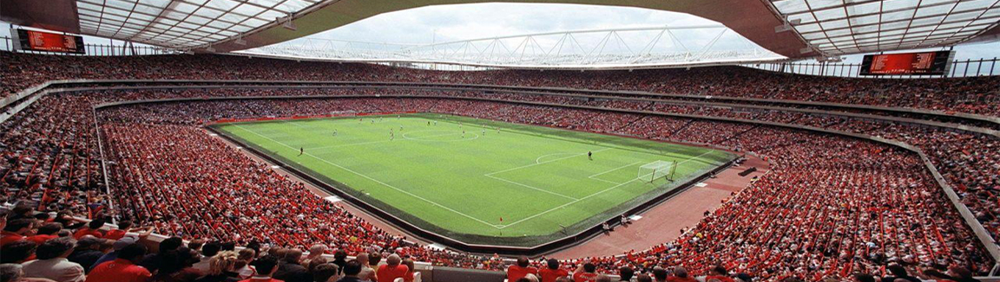

San siro
San Siro Stadium: The Iconic Home of AC Milan and Inter Milan
The San Siro Stadium, officially known as Stadio Giuseppe Meazza, is a historic football stadium located in Milan, Italy. It is the revered home ground for two of Italy's most iconic football clubs, AC Milan and Inter Milan. With its grandeur, passionate atmosphere, and rich footballing heritage, San Siro holds a special place in the hearts of fans around the world.
A Cathedral of Football
San Siro is often referred to as a cathedral of football, a majestic arena that embodies the spirit and passion of Italian football. Its iconic architecture, towering stands, and vibrant atmosphere create an electrifying backdrop for thrilling matches.
A Historic Venue
San Siro has stood since 1926 and has witnessed countless historic moments in football. It has hosted numerous domestic and international matches, including finals of prestigious competitions like the UEFA Champions League and the FIFA World Cup.
The Rivalry of Milan
As the shared home of AC Milan and Inter Milan, San Siro has witnessed the intense rivalry between the two clubs. The Derby della Madonnina, the local derby between AC Milan and Inter Milan, is one of the most fiercely contested matches in Italian football, adding an extra layer of excitement to the stadium.
A Stage for Footballing Legends
San Siro has hosted some of the greatest footballers in history. Legends like Paolo Maldini, Giuseppe Meazza, Franco Baresi, and Javier Zanetti have graced its turf, showcasing their skills and leaving an indelible mark on the stadium's rich legacy.
The Curva Sud and Curva Nord
The stands of San Siro are divided into two distinct sections: the Curva Sud (South Curve) and the Curva Nord (North Curve). These sections house the most passionate supporters of AC Milan and Inter Milan, respectively, creating an intense and vibrant atmosphere during matches.
A Must-Visit Destination
For football enthusiasts, a visit to San Siro is a pilgrimage. Stadium tours provide an opportunity to explore the hallowed grounds, visit the trophy rooms, and soak in the history and legacy of both AC Milan and Inter Milan.
A Symbol of Milan
San Siro is not just a stadium; it is a symbol of Milanese identity and pride. It represents the rich footballing heritage and the deep-rooted passion for the beautiful game in the city of Milan, making it a cherished landmark for football fans worldwide.
- Millan - Itally.
- 80,018 Spectators.
- The biggest Stadium in Italy.